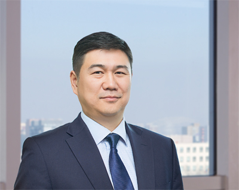

Secretary General Secretariat of the State Great Hural (Parliament) of Mongolia
TSOLMON Tsedev
TSOLMON Tsedev
The Secretariat of the State Great Hural provides professional, technical and organizational assistance and ensures proper working conditions for the members of the State Great Hural, its standing and other committees.
- The Secretariat:
- - renders professional methodological assistance to the State Great Hural, its members, standing and other committees;
- - keeps track of the State Great Hural budget and does the preparation and ensures proper working conditions for the State Great Hural sessions;
- - provides good working conditions of the technical facilities, maintains order at the session hall;
- - prints and distributes decisions and resolutions of the State Great Hural and other documents;
- - receives information, suggestions, petitions, complaints and takes appropriate steps towards their solution and informs members of the State Great Hural;
- - maintains the archives and papers and assists foreign guests
- - is responsible for the foreign affairs and documentation of the State Great Hural, the Secretariat and its organizations, for the foreign visits of members of the State Great Hural; and for receiving delegates from foreign countries visiting at the Inter-Parliamentary level
- - implements the duties charged by laws or decisions of the State Great Hural;
The Secretary General is appointed by the State Great Hural and is responsible for the preparation work of the plenary session of the State Great Hural and for regulating its daily activities, for assistance to the Chairman of the State Great Hural and for managing the Secretariat.